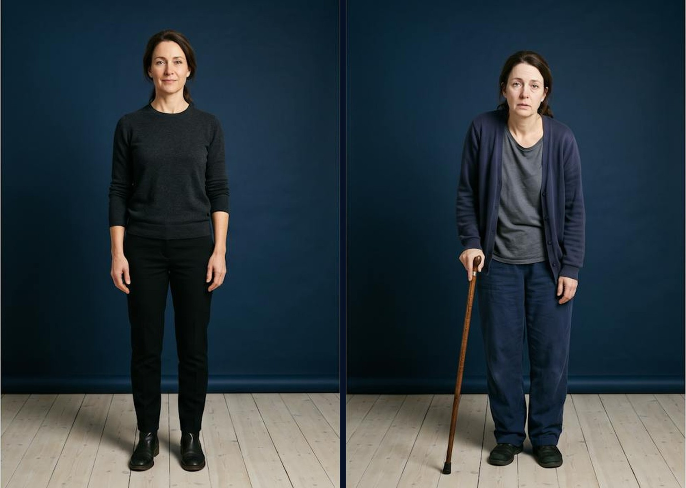
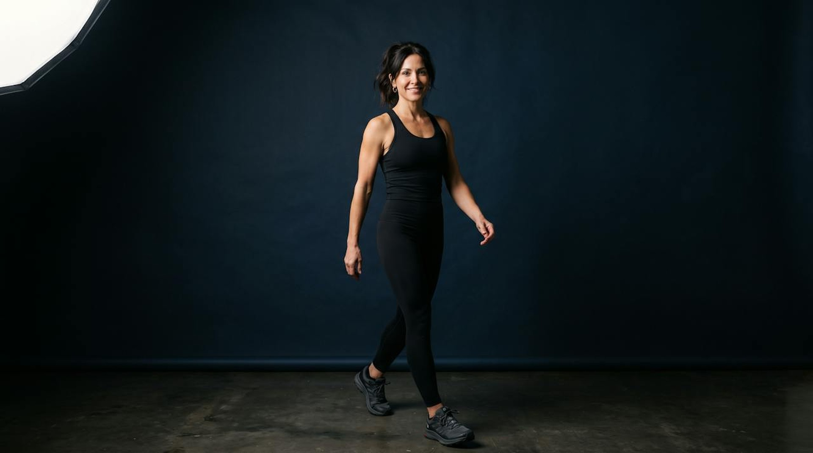
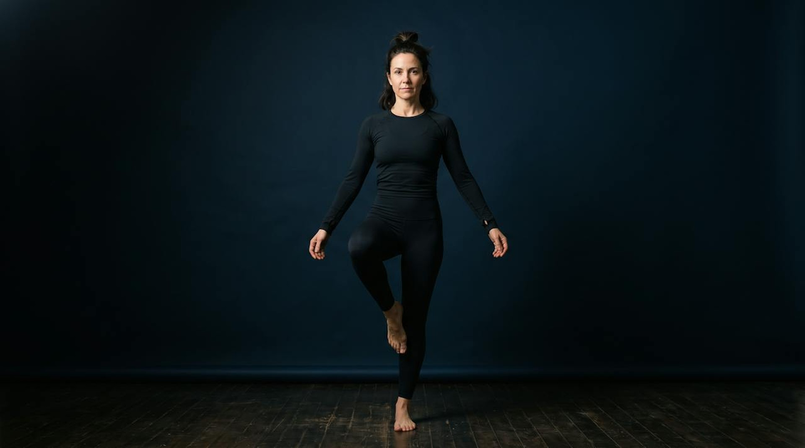

Built from the thinking page, slide by slide, in her order, with her builds shown as frames. Seventeen slides, every headline hers.
SLIDE 1Her on camera. The field, lit. The headline arrives on “very normal.”
THE LONGEVITY MASTERCLASS, JULIE GIBSON CLARK, LIVE
Welcome. I am very normal.
01 / 17
SLIDE 1, build 2The whole hour lives in the gap between these two numbers.
Second in the world, 2023.
About twelve dollars a day.
01 / 17
SLIDE 2Her photograph, when it arrives. Until then her two ages carry the why: the mother who can still carry the groceries at seventy and hold a conversation at ninety.
MY WHY
Why I went down this path.
70
still carry the groceries
90
still hold a conversation
Her photograph goes here when she sends it: her and her son, full bleed, graded into the navy, the headline low and left.
02 / 17
SLIDE 3, build 1Nothing else on screen, so the room gets the point first.
Ten years pass. By this test, I age about six.
03 / 17
SLIDE 3, build 2Every number engraved in the instrument: 1.0 at the top for most people, the needle on 0.665, the 0.76 tick, the red side running faster than the calendar.
DUNEDINPACE, MY PACE OF AGING
Ten years pass. By this test, I age about six.
The speed towards death.
1.0 is one year per year. Her best 0.65, her three-test average 0.665. The honest part: it went back up to 0.76, and she tests again in December.
DunedinPACE: Belsky et al., eLife 2022. Faster pace, shorter healthspan: Balachandran et al., Nature Aging 2024. 65+ cohort studies, 18 countries (Duke, 2025).
03 / 17
SLIDE 3, build 3The population curve beside the gauge: most people at 1.0, a tail aging fast, her point marked. The speed means nothing without the crowd.
DUNEDINPACE, MY PACE OF AGING
Ten years pass. By this test, I age about six.
The speed towards death.
1.0 is one year per year. Her best 0.65, her three-test average 0.665. The honest part: it went back up to 0.76, and she tests again in December.
DunedinPACE: Belsky et al., eLife 2022. Faster pace, shorter healthspan: Balachandran et al., Nature Aging 2024. 65+ cohort studies, 18 countries (Duke, 2025).
03 / 17
SLIDE 4, build 1Aging at the root; the four things everyone fears on the branches. Slow the root and all four move back at once.
WHY ANYONE BOTHERS
Longevity is like a cake.
The geroscience hypothesis: slow aging itself and heart disease, cancer, dementia and type 2 diabetes move back together. Buck Institute; López-Otín et al., Cell 2023.
04 / 17
SLIDE 4, build 2Whole, baked, iced, labelled exactly as she drew it: Sleep, Food, Movement, Stress Management, the thin layer, the icing as Therapies. It returns at the start of each layer, lit.
HOW I ORGANIZE THE SCIENCE
Longevity is like a cake.
Icing
Therapies
Stress Management
Movement
Food
Sleep
The thin layer
Menopause
04 / 17
SLIDE 5A map, not a list: cost left to right, human evidence bottom to top. Sauna cheap and high; the drips, peptides and stem cells expensive and low; rapamycin in the middle with a doctor; the two-million program off the edge.
THE ICING, FROM SAUNA TO RAPAMYCIN
Not wrong. Not first.
Price and proof are two different axes.
In amber: four things she would leave alone until the cake is baked. The coin: twelve dollars a day, mostly groceries.
Sauna: Kunutsor, Jae, Kurl and Laukkanen, Scand. Cardiovasc. J. 2024, 2,575 men, 27.8 years; Laukkanen et al., BMC Medicine 2018. Placements to confirm with Julie.
05 / 17
SLIDE 6, build 1Everything dark except the layer she means.
THE THIN LAYER
Menopause therapy is a layer, not icing.
Find a certified practitioner through The Menopause Society.
The Menopause Society, 2022 Hormone Therapy Position Statement. FDA, November 2025: boxed warnings removed from menopausal hormone therapy.
06 / 17
SLIDE 6, build 2Menopause to ten years after, drawn as a window, because the science she quotes is a window.
THE THIN LAYER
Menopause therapy is a layer, not icing.
Under sixty, or within ten years of menopause: the benefits generally outweigh the risks. Their sentence, not hers.
The Menopause Society, 2022 Hormone Therapy Position Statement. FDA, November 2025: boxed warnings removed from menopausal hormone therapy.
06 / 17
SLIDE 6, build 3The four layers light bottom to top, the icing dims, and the headline changes to the sentence that starts the next forty-five minutes.
THE BRIDGE
Four layers hold up the cake.
Sleep. Food. Movement. Stress management. The next forty-five minutes.
06 / 17
SLIDE 7The cake with sleep lit. The night as one arc from moon to sun with the repair shift across its deepest part, and her five numbers in the order they happen, from last meal to waking.
LAYER ONE
Sleep is the repair shift.
the repair shift
6:00 PM
last meal, three hours before bed
8:00 PM
screens off, the wind-down
9:00 PM
lights out
5:00 AM
up
8 hours
of opportunity, cool and dark
Regularity beat duration: Windred et al., Sleep 2023, 60,977 adults, up to 48% lower mortality for the most regular. The brain’s drainage imaged in living people: Piantino et al., PNAS 2024.
07 / 17
SLIDE 8Nothing but the line, the largest type since the two facts. A beat of silence before she speaks.
“I’ll sleep when I die,” said the person aging at twice the normal speed.
08 / 17
SLIDE 9The cake with food lit. One real plate in three parts, her three lines beside the parts they name, and her five numbers down the left like hours. The fiber gap, the two numbers that make the lever land.
LAYER TWO
Take the religion out of your diet.
Whole food
the default
Fiber
the lever, vegetables
Protein
the floor, every meal
1 lb
of vegetables a day
1 g
of protein per pound of goal weight
8 to 6
the eating window
10 AM
coffee cutoff
Zero
alcohol on training days
Fiber target 25 to 38 g a day. More than 90% of women and 97% of men miss it, so almost everybody has room.
Dietary Guidelines for Americans, 2020 to 2025. Her numbers are hers, not a prescription; not a word about weight, on purpose.
09 / 17
SLIDE 10One object, the glucose trace from the monitor every Academy student wears: the sugary meal as the spike, the balanced plate as the low wave. Spike at the peak, Signal on the band that stays lit, Scar at the tail where HbA1c lives.
SUGAR AND AGING
The one thing every diet agrees on.
Spike
Spike
what the monitor shows after a sugary meal
Signal
insulin stays on all day. Deregulated nutrient sensing, a hallmark of aging
Scar
sugar sticks to proteins. HbA1c is sugar stuck to your red blood cells
Every gram of added sugar, an older biological age: Chiu, Epel and Laraia, UCSF, JAMA Network Open 2024, 342 women. Under 25 g a day: Huang et al., BMJ 2023. López-Otín et al., Cell 2023.
10 / 17
SLIDE 10, build 2The object dims and the sleep-and-food half of the hour ends on two checkboxes.
YOUR TWO MONDAY CHANGES
Move dinner earlier. Rebuild one plate.
It doesn’t need to be six. Just earlier than it is now.
Protein as the floor, a pile of vegetables, whole food where you can.
10 / 17
SLIDE 11Her line, exactly: two women, full height, the same age, same light, same background; one stands tall, one leans on a cane. Two words, cream, centered low. Under each figure, two bars; the rose gap under the woman on the cane is the 12.4 years.

Same age.
years lived
years lived well
years lived
years lived well
12.4 years
The gap between years lived and years lived well: 9.6 worldwide, 12.4 in the United States, the widest of 183 countries. Garmany and Terzic, Mayo Clinic, JAMA Network Open 2024.
11 / 17
SLIDE 12The body map in the center, four points lit. Around it her four tiles as real photographs of a woman of forty-five doing each one, looking at you: a sensible squat, hard effort on the bike, the easy walk, the one-leg stand. Each tile carries its colour onto the body: the point it serves lights in that colour, bones and muscle, heart, heart, brain, and each carries the number researchers use to predict how long you live. No arrows, nothing crossing.
LAYER THREE
Four types of movement, four parts of you.
Weights for bones and muscle
predicts how long you live: grip strength
VO2 max for the heart
predicts how long you live: fitness, one MET at a time

Zone 2 for the heart
predicts how long you live: 7,000 steps a day

Mobility and balance for the brain
predicts how long you live: the one-leg stand
brain
heart
bones and muscle
Grip: López-Bueno et al., 2022, 3.1M people. Fitness: Lang et al., BJSM 2024, 20.9M observations. Steps: Ding et al., Lancet Public Health 2025, 47% lower mortality at 7,000. Balance: Mayo Clinic, PLOS One 2024; Araujo et al., BJSM 2022.
12 / 17
SLIDE 13The portfolio placed on seven days, in the same four colors as the tiles. The step line under all seven. The simplest object in the deck, on purpose.
THE DRILL-DOWN
What my week looks like.
Mon
Strength
Tue
Zone 2
Wed
Strength
Thu
Sprints
Fri
Strength
Sat
Zone 2
Sun
Mobility
8,000 steps a day, every day, under all seven
More than you need on day one. A walk is a perfectly respectable place to begin; a walk after the biggest meal earns its place.
13 / 17
SLIDE 14, build 1The cake with stress lit, held through her story. No graph, no numbers, because the story is personal and the screen stays out of the way.
LAYER FOUR
The layer people skip.
A divorce. A test. Cortisol high. Six months of practice and it came back to normal and stayed there.
14 / 17
SLIDE 14, build 2Two short arcs rising, one long arc falling, drawn large and animated at speaking pace as she leads the room through it. The arcs are the instruction.
THIRTY SECONDS, TOGETHER
Two in. One long out.
A double inhale through the nose, a long slow exhale through the mouth. Three together, on camera.
The physiological sigh: Balban, Spiegel and Huberman, Stanford, Cell Reports Medicine 2023. 111 people, five minutes a day, one month.
14 / 17
SLIDE 15Her whole protocol as one day, 9 PM at the top so the eye starts at bedtime, every hour colored by its layer, the eating window as one band, and the collision marked where her day fights the world. Built to be screenshotted.
THE DAY IS BUILT BACKWARD FROM BEDTIME
Julie Gibson Clark’s Longevity Protocol
5:00 AM
wake, water, light
7:00 AM
training, then the sauna
8:00 AM
eating window opens
10:00 AM
coffee cuts off
Midday
biggest meal, then a walk
Afternoon
meditation
6:00 PM
last meal, the window closes
8:00 PM
screens off
9:00 PM
lights out
7:30, a family dinner: where the clock fights real life
Manoogian et al., Annals of Internal Medicine 2024, the TIMET trial, Salk Institute and UC San Diego, 108 adults, three months.
15 / 17
SLIDE 16, build 1Opens on the open notebook with the cake small beside it, and her line.
BEFORE ANY SUPPLEMENT
You don’t need a lab. You need a notebook.
Every layer of the cake shows up in a number you can get without a lab. The point isn’t to measure everything. It’s to stop guessing.
16 / 17
SLIDE 16, build 2The headline and three tall cards: Vitamin D, Homocysteine, Red blood cell nutrient levels. One line beneath.
BEFORE ANY SUPPLEMENT
Test. Then buy.
Vitamin D
Homocysteine
Red blood cell nutrient levels
Ask your doctor which of these makes sense for you. A supplement is icing; a test tells you where the cake has a hole.
16 / 17
SLIDE 16, build 3The cards slide left and her list stands on its own, each item with its monthly cost and one total, the NOVOS disclosure in small type. Shown last because the order is the lesson.
WHAT ONE PERSON CHOSE
My list, after my tests.
Each item with its monthly cost, one total, from her website. NOVOS, with the affiliation stated. Not a shopping list.
The list and costs come from her website before this goes on camera. Inside the Academy a whole session is spent on this with your own blood work.
16 / 17
SLIDE 17, build 1The white cake she would actually bake, every layer visible one last time.
THE WHOLE CAKE
That’s the cake.
Numbers aren’t what kept her doing this for ten years. Three questions did.
17 / 17
SLIDE 17, build 2How long we live and how long we live well, the gap between them, and the second line rising to close it.
MY INTENTION
Healthspan to match lifespan.
Fries drew it as two lines. Most of medicine pushes the first line out. The point is to drag the second one up to meet it.
Compression of morbidity: Fries, NEJM 1980. The gap today: 9.6 years worldwide, 12.4 in the United States. Garmany and Terzic, JAMA Network Open 2024.
17 / 17
SLIDE 17, build 3Why, Intention, Resources on a lit ring, a line between each pair; the center lights only when all three are on.
THREE QUESTIONS, ONE CIRCLE
Why. Intention. Resources.
Take any one away and the other two fall over. The center lights only when all three are on.
17 / 17
SLIDE 17, build 4In her video-card style: the Academy mark, the two lines, and the ask that ends the hour.
The same cake, built week by week, with a teacher.
Eighteen weeks. Eighteen live sessions. A class of eight to fifteen. A glucose monitor in your mailbox.
Your why. Your intention. Your resources. One thing, forty-eight hours.